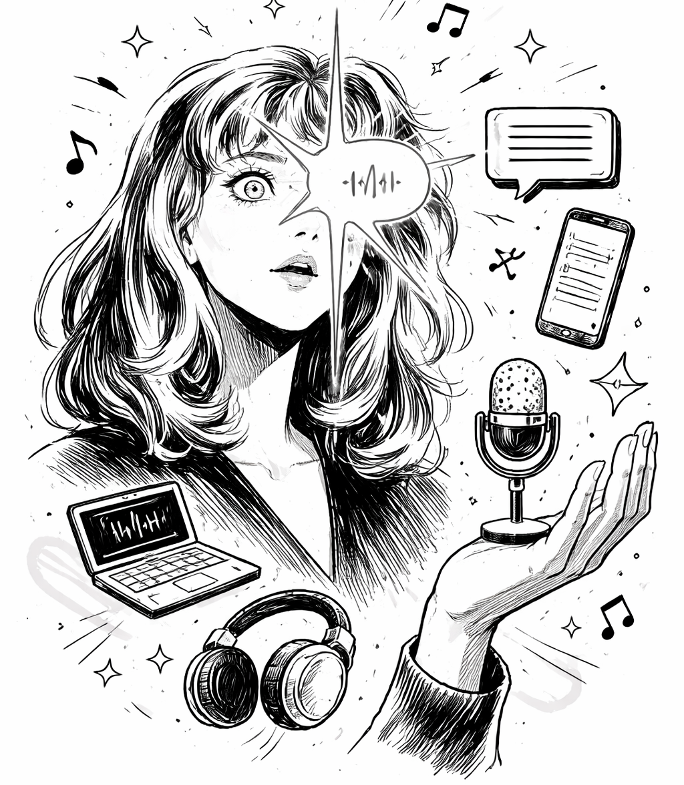

Speech-to-Text и Text-to-Speech — изследване на технологиите, невронните модели и реалните приложения зад гласовия изкуствен интелект.

Преобразуването на реч в текст е софтуер за разпознаване на реч, който позволява разпознаването и превода на говорим език в текст чрез компютърна лингвистика. Известен е още като разпознаване на реч или компютърно разпознаване на реч. Специфични приложения, инструменти и устройства могат да транскрибират аудио потоци в реално време, за да показват текст и да действат върху него.
Прочети повече →AI текст в реч (TTS) е технология, която преобразува писмен текст в говорим звук. Вие му давате думи. Той ви дава глас, който чете тези думи на глас. Старите системи за синтез на реч (TTS) са съединявали предварително записани звукови клипове. Те са звучали накъсано и роботизирано. Вероятно сте чували тези гласове на GPS устройства или автоматизирани менюта на телефони.
Прочети повече →Използването на TTS се увеличи драстично през последните няколко години. Има няколко причини за това.
Прочети повече →